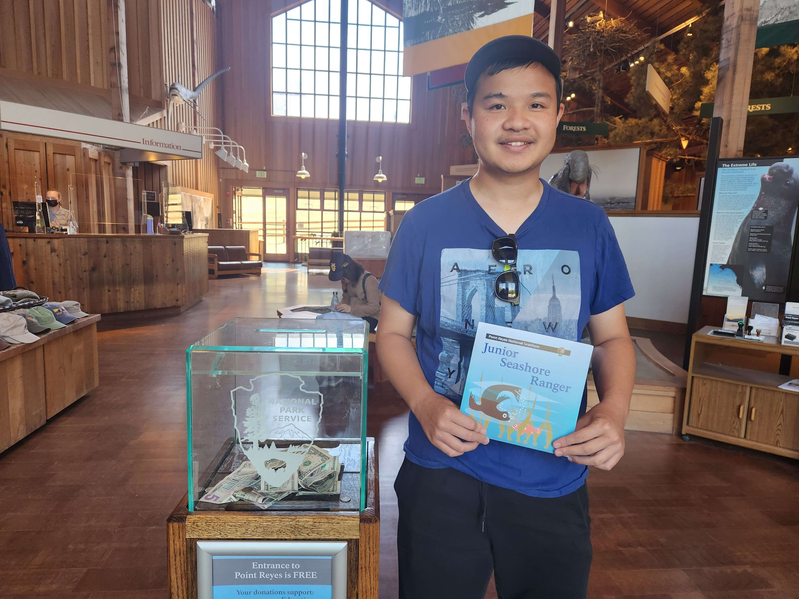
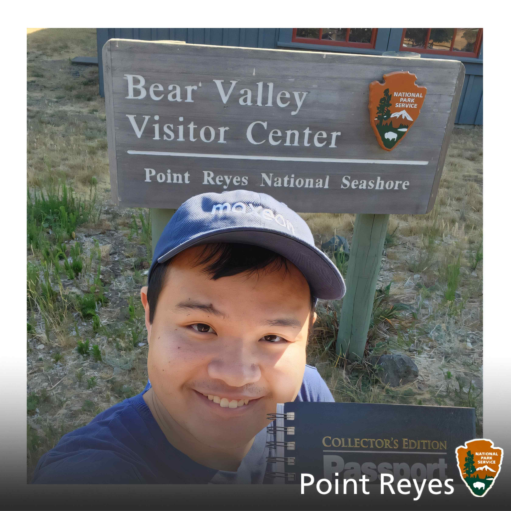

{kind=link}

Pledge


Give me a one paragraph description of Point Reyes National Seashore.
Point Reyes National Seashore, located in Richmond, California, commemorates the contributions and experiences of American civilians during World War II. The park preserves and interprets historical sites and artifacts related to the home front effort, particularly highlighting the role of women and minorities in the workforce, symbolized by the iconic figure of "Rosie the Riveter." Visitors can explore exhibits, historic buildings, and interactive displays, gaining insight into the significant social and economic changes that occurred as a result of wartime mobilization, including the transformation of gender roles and the emergence of a diverse workforce crucial to the war effort.
Rosie the Riveter was a nice historical site only an hour away from my hometown in San Jose! Being located in the east bay, it's pretty nice to see a place that contrtibuted to the development of the Bay Area in terms of shipment and artillery during the WWII. When first going into the visitor center, I watched a short role regarding the pivotal role of working women making ammunition from the shipyards. They essentially took over the role of men, who transitioned to being deployed overseas during the war. It was impressive to learn that some of these women built "Liberty" ships in only 4 days!
Afterwards, I visited the shipyards that were used in WWII. The SS Red Oak Victory was a very impressive ship, looking at it from the outside! It was durable, decently large in size, and featured honarable medallions on it's sign. Finally, we enjoyed the view of the east bay from the visitor center. Then, I got my badge and did the pledge along with some other avid Junior Rangers (some of which are my family members)!
To be Uploaded
